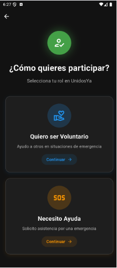
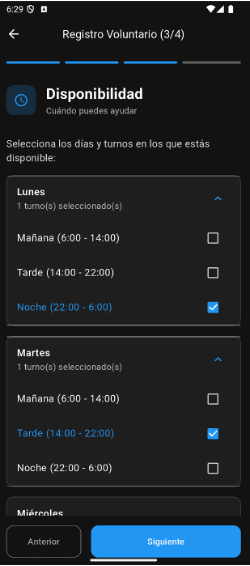
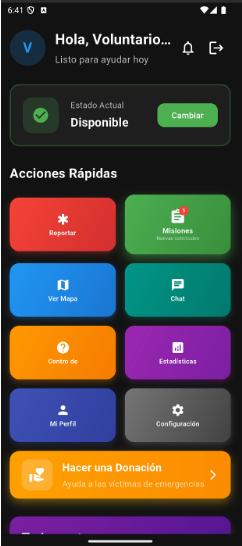
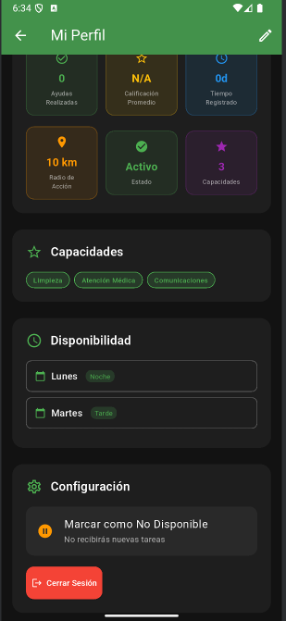
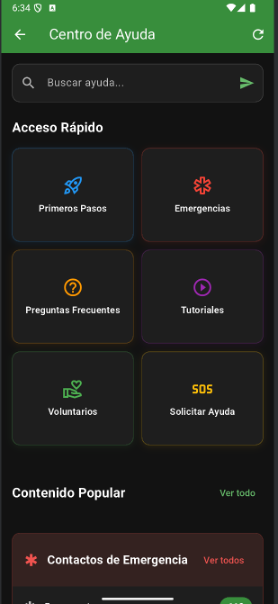

UnidosYa is an Android mobile application that coordinates affected individuals and volunteers during natural disasters. It was directly inspired by the 2024 Valencia DANA floods — the deadliest natural catastrophe in Spain since 1957 — which killed over 200 people across 75 municipalities.
More than 50,000 spontaneous volunteers mobilised, but their efforts were severely hampered by a complete lack of digital coordination tools. Coordinators were using phone calls and spreadsheets. UnidosYa was built to solve that.
The system enables real-time volunteer-to-task matching, geolocation-based mission assignment, and secure communication — all GDPR-compliant and with offline operability for disaster-affected environments.




